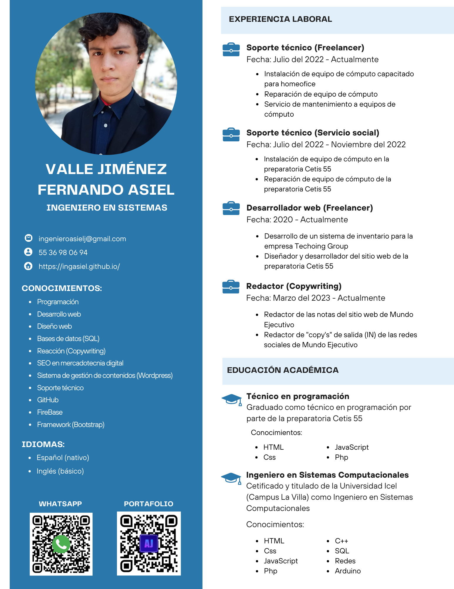

Redes sociales
Formas de localizarme a través de mis redes sociales y otros medios de contacto como lo son el correo electrónico y número celular
Curriculum Vitae

Experiencia
Desarrollador web Freelancer
Fecha: Desde el 2020 hasta la actualidad
Descripción: Soy desarrollador y diseñador web autónomo, donde desarrollé el sitio web de la preparatoria "Cetis 55" en el 2020. Posteriormente, en el 2021, creé un sistema para un consultorio dental que permitía generar recetas y expedientes. En el 2022 construí un sistema digital de inventario para la empresa "Techoing Group".
Soporte Técnico Freelancer
Fecha: Desde el 2020 hasta la actualidad
Descripción: Doy servicio de reparación a equipos de cómputo "Windows" cuyos cuales son tanto de escritorio como portátiles. También me encargo de darles mantenimiento, cambiar componentes internos y dar capacitación para un uso correcto de los mismos.
Soporte técnico (Servicio Social)
Fecha: Desde julio del 2020 hasta noviembre del 2022
Descripción: Como parte de mis actividades del servicio social di servicio de reparación, instalación y mantenimiento a equipos de cómputo con el sistema operativo "Windows". También preste los mismos servicios (a excepción de la reparación) en impresoras. También, configuré las redes del lugar, cuyo cual fue una preparatoria.
Redactor - Content M.
Fecha: Desde marzo del 2023 hasta la actualidad
Descripción: Redacto parte de las notas que salen en el portal digital de Mundo Ejecutivo junto a las pulicaciones de las redes sociales ("Copy's" Out) cuyas cuales van dirigidas a campañas digitales, como lo son la "Cumbre 200" y "Tecnologías de la Información".